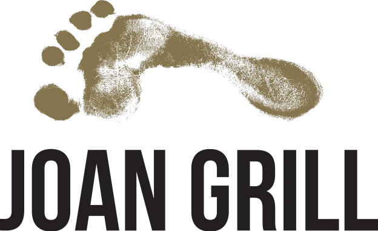
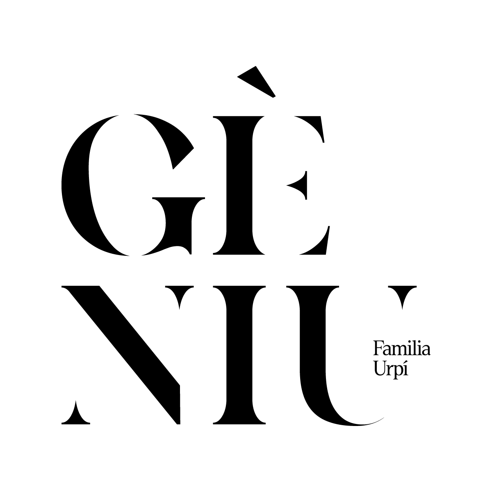

El viver de cellers de Vilafranca del Penedès s'estableix com un punt de referència clau per al suport a l'emprenedoria en el sector vitivinícola. El seu enfocament es focalitza en impulsar iniciatives innovadores, sostenibles i saludables en la producció de vins.
Aquest espai ofereix una àmplia gamma de recursos i serveis especialitzats per a facilitar el desenvolupament de nous projectes en l'àmbit vitivinícola. Des d'instal·lacions modernes fins a equipament d'última generació, el viver proporciona tot el necessari per a dur a terme activitats vitivinícoles de manera eficient i efectiva.
A més de les infraestructures físiques, el viver de cellers també es destaca pel seu compromís amb la transferència de coneixements tècnics i de gestió. Es brinden programes de formació i assessorament personalitzat per a ajudar els emprenedors a adquirir les habilitats necessàries i afrontar els desafiaments del mercat vitivinícola.
Una de les característiques distintives del viver és el seu èmfasi a fomentar la col·laboració entre emprenedors. Es promouen espais d'interacció i networking on els professionals del sector poden compartir idees, experiències i recursos. Aquesta col·laboració fomenta la sinergia i l'intercanvi de coneixements, contribuint així a la innovació i al desenvolupament continu del sector.